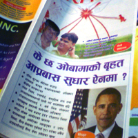
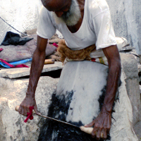
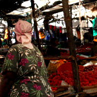

I've conducted ethnographic research in different settings. From informal settlements to immigrant communities, I've had the opportunity to interview a wide variety of remarkable individuals and learn in different challenging settings. Here's some of the research I've done.
In today's fast-paced world, it can be difficult to keep up with one new trend after another and respond accordingly. Companies value and need user insights to understand their target audience and how to design new products.
As an ethnographer, I work to understand brand perceptions, how users interact with different products and technology, and the meaning behind it all. I observe purchasing behaviors, conduct in-store and out-of-store interviews, and produce detailed ethnographic reports and observations to inform and create actionable insights.
Ongoing Work
I worked with the Somerville Community Corporation, a local organization dedicated to preserving social and economic diversity in the community. The purpose of this project was twofold:
1. To develop an understanding of the Union Square immigrant community
2. To create stories for purposes of community advocacy in the face of the MBTA Green Line extension project and gentrification of the neighborhood.
In 1985, the Red Line was extended into David Square, bringing with it significant changes and gentrification. The Green Line extension project brings with it similar implications; there are fears that rents will rise as the area becomes more gentrified. As East Somerville is home to a high percentage of immigrants and low- to middle-income families, there are concerns that they will be forced to relocate due to a rising cost of living. The question arises: how do we protect the needs and interests of those who make up the rich diversity and history of Somerville?
Immigrants moved to Somerville for a variety of reasons, including a cheaper cost of living than within Boston city, convenience to the city itself, and existing social networks. However, rising costs and changing demographics may eventually change the makeup of immigrants within Somerville. I studied the growing immigrant community of Nepalese and Pakistani immigrants, looking at those running local businesses. During this time, I wrote ethnographies of four South Asian business owners, and examined how cultural and social spaces are created within immigrant-owned businesses
In early 2010, I flew to Mumbai, India to asses the effectiveness of the Dharavi Redevelopment Project. Dharavi, one of the largest informal settlements in the world, is also known as the slum where the movie Slumdog Millionaire was filmed. The Dharavi Redevelopment Project aims to upgrade Dharavi by creating housing, clean water, sanitation, and more. However, slum upgrading projects face challenges for a variety of reasons. Many residents do not qualify for upgraded housing, or return to slums even after having been allocated housing.
Dharavi in particular is a unique case. A place of industry and economic center, Dharavi is separated into different neighborhoods, or nagars, according to industry. In many cases, these sites of industry serve not only as a workspace, but also as homes to the workers and their families. Therefore, questions arise. What will happen to the businesses in Dharavi if they are relocated? How are homes and businesses differentiated, and will these entrepreneurs receive land for both their homes and their businesses? How do communities that are less educated or organized advocate for themselves?
I interviewed NGOs and residents working in pottery, leather, garment, and recycling industries. During this time, I examined the production of social-work spaces in Dharavi, observing how several entrepreneurs worked where they lived. I spoke to industries such as the potters, who had conducted successful community advocacy, to understand how other communities could learn from their model. The final product was a recommendation for differential development according to each unique community
 While living in the Olympic estate of Kibera in 2009, I came upon a small community organization working to benefit the residents of the slum through access to opportunity. One program focused on women's empowerment through entrepreneurial opportunities. In partnership with the organization, I researched HIV-positive women entrepreneurs who were a part of the program. These women had received microloans for their informal businesses, which ranged from selling vegetables and produce to cooking small meals on the side of the street. To assess how the loans were being used and their impact, I engaged in participant observation, created surveys, interviewed, and visited these women in their homes. I identified potential barriers to success, documented their stories, and created recommendations for the organization in charge of the loans.